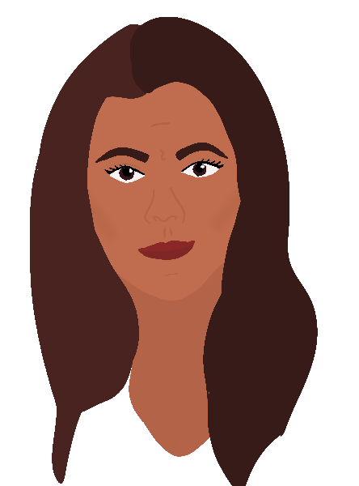
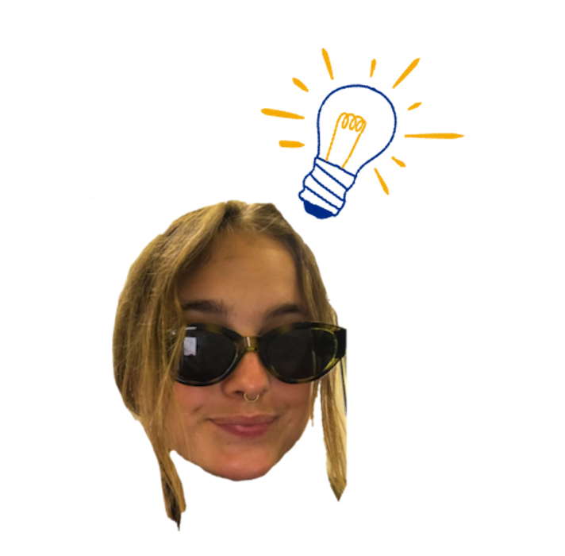

I am from Copenhagen, Denmark, where I’m currently doing an AP in Multimedia Design in the international class. I really enjoy the creative process, though I find it much more challenging than coding, which is more logical and “safe”. Therefore, I choose the Digital Design and Content elective this semester, to challenge myself a bit and get out of my comfort zone. I’ve really enjoyed it so far, and sometimes we even dive into the psychological/sociological aspects of design and communication, which I LOVE.
Come say hi!
When I grow up, I wanna be...
Dr. Brene Brown, PhD
Brene Brown is a reseacher with several degrees in social work. She's like a fairy godmother to me and her work on shame and empathy has tought me so much. I love her and would love to spend my life merging such incredible content with the creative tools that this education is teaching me.
Anders Agger
Anders Agger is a journalist and a man with a very cool job. He gets to interview and talk with a variety of people with different backgrounds, classes, races, ages and so on, which I think sounds like a great privilage as well as a good ol' time. He gets to be creative and he gets to share that with the rest of Denmark.
Dr. Orna Gulralnik, PsyD
Orna Guralnik is a Clinical Psychologist based in New York, known for her participation in the show, Couples Therapy. The show shows five couples' private therapy sessions, and over the months where the sessions are recorded, the couples develop communication skills and stronger bonds. Again I am awed at the merge of such interesting topics with incredible creative performances.
Ida Sophia

Ida Sophia is a former The Voice radio host as well as an activistic influencer type thing... But she is very real and honest and the way that she is changing the Danish instagram scene is very inspiring to me. In many ways, I believe that she is an example of the change that young men and women have needed, for decades.
Carrie Bradshaw
Ahh Carrie Bradshaw. The independent, female character that the late 90's needed, to show the imperfections of the 30'somethings. She is wild, she is messy, she is a woman. And together with Bridget Jones, she portraits a relatability that tells us "you're okay"; the very words we're all longing for. She reminds us to take life a bit less serious and to live, love and laugh while we can.
To create is to make something that has never existed before.
There is nothing more vulnerable than that.
- Dr. Brene Brown
What I know…
Webdevelopment
- HTML
- CSS
- JavaScript
- Wordpress
- Bootstrap
- Greensock
- Git/Github
- Animations
- JSON
- CMS
- RestDb
- Dynamic web
- Netlify
- Insomnia
Design & content

- Adobe Photoshop
- Adobe Illustrator
- Adobe XD
- Adobe InDesign
- Animated GIF's
- Wireframes/ Prototypes
- Testing
- Composition
- Information Architecture (IA)
- Design systems & libraries
- Visual identities
- Logos & 5. elements
- Moodboards & style tiles
SoMe & marketing
- SEO
- Neuromarketing & consumer psychology
- PESTEL & SWOT
- User stories
- OMD model (consumer journey)
- Target groups & personas
- Business model canvas
- Copywriting
- MailChimp
- GDPR & cookies
- Facebook business manager
Other
- Premiere Pro
- Idea generation
- Report writing
- Team Canvas & Trello
- Concept development
- UX research/ design
- Trend research & benchmarking
- Motion graphics
- Interviews
I wanna get better at...
Selected projects
Compassion game
Animation, 1st Semester
Though the quality of the name is questionable, this was a great project, where we really were given much creative freedom and were shown how fun Multimedia Design can truly be! It was a solo project, and though I don't agree completely with this psychological approch anymore, it was so inspiring to be able to take the project in a direction that really interest me. And though it quickly became clear that my game stood out from the rest a bit, it's still one of the projects that I am the proudest of, to this day.
Link to site
Cherry Pop - Sex Ed
Basic UX, 1st Semester
The Cherry Pop project was fun. It was a bit of an awkward topic and because the theme of the project was User Expeience, the main focus was to research and do surveys to create a solution that would satisfy the user. This was incredibly interesting because we dug a bit and found out where some of the shame behind the topic comees from. I came up with the "A Letter To Sex" section, where we had the participants write a letter to sex, which is probably the thing I'm the most proud of in this project. We were also able to work with the Psychological/Sociological aspects of the topic, which we all found very interesting, as well as creating an aesteically pleasing end result.
Link to site
Killer Kebab
Exam project, 2nd Semester
Our 3rd semester exam project was cool because we got to work with a real life client and it demanded incredible thoroughness. At this point, we had also improved drastically compared to 1st semester and the projected included pretty much everything we had learned from advanced coding to content creating to writing 100 pages report to finish it off.
Link to siteSee project documentation report
Øko Giflen
Content Marketing, 3rd Semester
Out last project shows improvements compared to the codingwork from the past semesters, and was handcoded from scratch, now including Greensock and Bootstrap, as well as cursor customization and a favicon. It also shows thorough concept development and cohesiveness in visuel identity.
Link to site